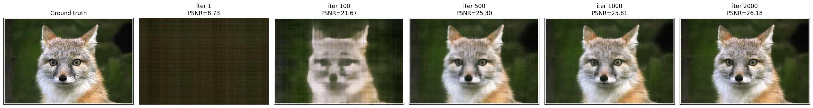
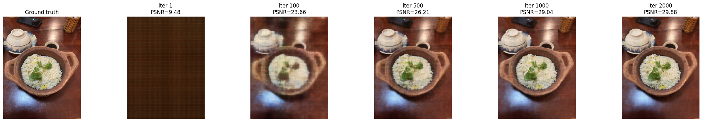
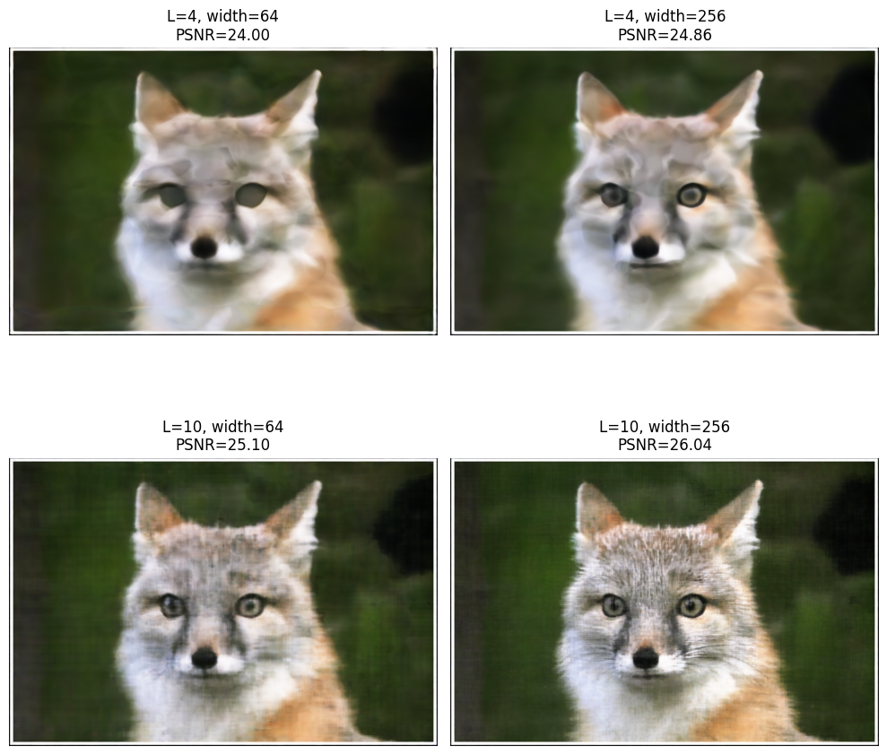
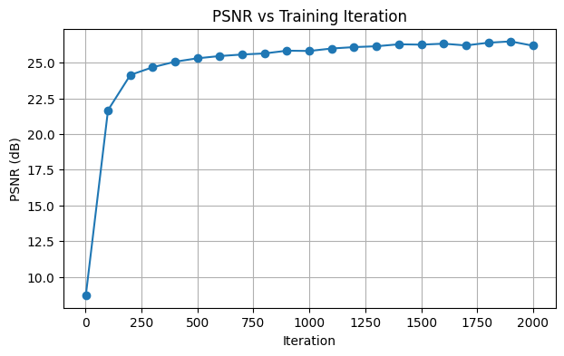
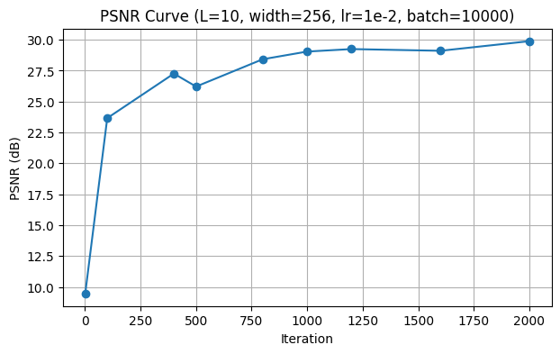
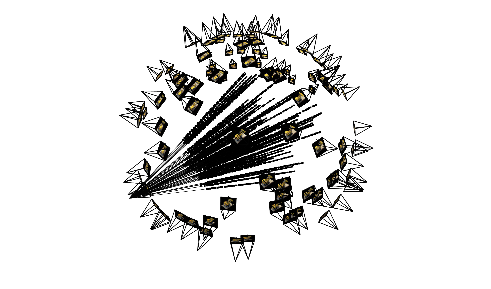
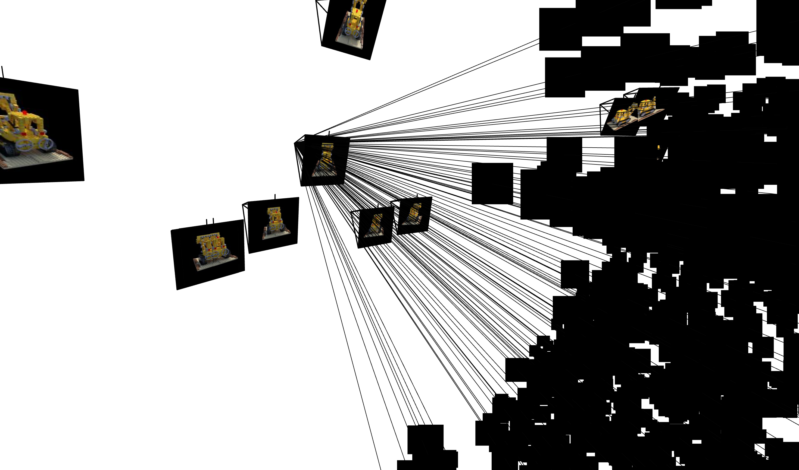
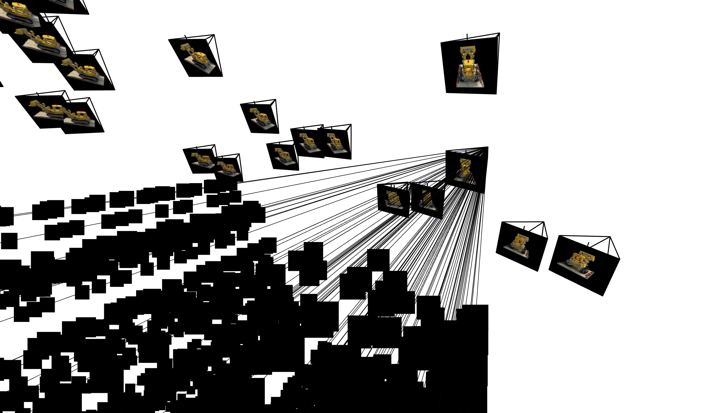
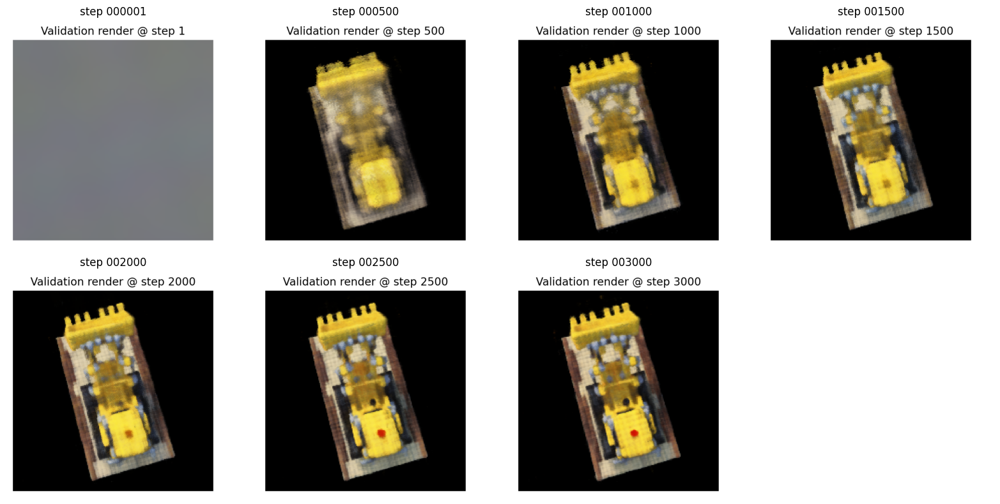
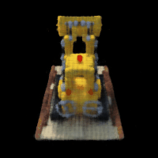

This homework explores neural field representations for both 2D image fitting and multi-view neural radiance fields.
In Part 1, I trained a coordinate-based MLP to map image coordinates to RGB values and studied the effect of
positional encoding and network width. In Part 2, I extended the idea to a NeRF pipeline by converting sampled
pixels from multiple calibrated views into rays, sampling 3D points along those rays, predicting color and density with
a NeRF network, and rendering novel views through volume rendering.
The deliverables for Part 1 were to report the model architecture and training setup, show training
progression for both the provided test image and one custom image, compare final outputs for different
positional encoding frequencies and hidden widths, and plot PSNR curves for the runs.
Model Architecture and Training Setup
I used a 2D neural field that maps pixel coordinates (x, y) to RGB color values (r, g, b).
The input coordinates were first passed through sinusoidal positional encoding with maximum frequency
level L = 10. The encoded coordinates were then fed into a multilayer perceptron with
3 hidden layers, each of width 256. ReLU was used after each hidden layer, and a
Sigmoid activation was used at the output layer so that the predicted RGB values stayed in the range [0, 1].
The model was trained using MSE loss and the Adam optimizer with a learning rate of
1e-2. The batch size was 10000, and the network was trained for 2000 iterations.
Number of hidden layers
3
Hidden width
256
Positional encoding frequency
L = 10
Activation functions
ReLU (hidden), Sigmoid (output)
Loss function
MSE
Optimizer
Adam
Learning rate
1e-2
Batch size
10000
Training iterations
2000
PSNR curve settings: for the PSNR run, I used L = 10hidden width = 256hidden layers = 3learning rate = 1e-2batch size = 10000iterations = 2000
Training Progression — Provided Test Image

Training progression for the provided test image at different optimization stages.
This figure shows how the 2D neural field gradually fits the image as training proceeds.
output/part1/test_training_progression.png
Training Progression — Custom Image

Training progression for my custom image. This complements the test-image experiment and shows
that the same architecture can fit another RGB image through coordinate-based regression.
output/part1/myimg_training_progression.png
Effect of Hyperparameters — Positional Encoding and Width

Final results for different choices of maximum positional encoding frequency and hidden width.
The 2×2 comparison highlights how low-capacity settings reduce high-frequency detail, while stronger
settings improve image reconstruction quality.
output/part1/test_hyperparameters_affect.png
PSNR Curves

PSNR curve for the provided test image.
output/part1/test_PSNR_curve.png

PSNR curve for my custom image.
output/part1/myimg_PSNR_curve.png
Part 1 Summary
Overall, the 2D neural field successfully learned to represent both the provided image and my custom image.
Increasing positional encoding frequency and hidden width generally improved sharpness and fidelity, while
the PSNR curves showed steady optimization progress across training iterations.
Part 2 — Fitting a Neural Radiance Field from Multi-view Images
The deliverables for Part 2 were to briefly describe the implementation, visualize cameras, rays, and sampled
points in 3D, show training progression through rendered validation images, plot the validation PSNR curve,
and render a spherical orbit video of the lego scene using the provided test camera extrinsics.
Implementation Overview
I built the NeRF pipeline around the provided multi-view lego dataset. The dataloader randomly samples pixels
from the training images, converts those pixels into rays using the corresponding camera intrinsics and extrinsics,
and returns ray origins, ray directions, and target RGB values. Along each ray, I sample 3D points between the
near and far bounds, evaluate the NeRF network at those points, and then perform volume rendering to obtain the
final predicted pixel color.
During training, batches of rays are rendered and supervised with the ground-truth pixel colors. For monitoring,
I periodically rendered held-out views from the validation set and tracked both training loss and validation PSNR.
After training, I used the learned model to synthesize novel views and generate a spherical orbit animation of the lego object.
Outputs included here:output/part2/viser_visualization-1.pngoutput/part2/viser_visualization-2.pngoutput/part2/viser_visualization-3.pngoutput/part3/training_progression.pngoutput/part3/training loss and validation psnr.pngoutput/part3/lego_orbit.gif
Rays and Samples Visualization with Cameras (viser)
The following 3D visualizations show the multi-view camera setup together with sampled rays and their associated
points in space. These plots were useful for checking that the sampled rays remained consistent with the camera frustums
and that the ray geometry matched the scene layout.

Wide view of the camera arrangement with sampled rays and points.
output/part2/viser_visualization-1.png

A closer inspection of rays emitted from one part of the camera ring toward the lego object.
output/part2/viser_visualization-2.png

Another viewpoint showing sampled rays intersecting the central object region from multiple cameras.
output/part2/viser_visualization-3.png
NeRF Network Architecture
The model used for Part 2 follows the standard NeRF decomposition into a position branch, a density head,
and a view-dependent color branch. The 3D sample positions are first encoded with sinusoidal positional encoding,
and the shared trunk predicts a latent feature representation from which both density and color are derived.
Position encoding
3D world coordinates, L_xyz = 10, include_input = True
Direction encoding
Ray direction, L_dir = 4, include_input = True
Shared trunk
8 fully connected layers of width 256
Skip connection
Concatenate encoded xyz input back after the 4th layer
Density head
Linear(256 → 1) followed by Softplus for non-negative density
Feature branch
Linear(256 → 256) + ReLU
RGB head
Concatenate feature with encoded direction → Linear(256 + dir_dim → 128) → ReLU → Linear(128 → 3) → Sigmoid
Output ranges
RGB in [0,1], density non-negative
NeRF hyperparameters used in the implementation
L_xyz = 10
L_dir = 4
hidden_dim = 256
shared trunk = 8 layers
skip connection = after layer 4
sigma activation = Softplus
RGB activation = Sigmoid
The architecture follows the starter NeRF design from the homework diagram: positional encoding for 3D sample
positions and ray directions, a deep shared trunk with a skip connection, a density prediction head, and a
view-dependent color head.
Training Progression

Predicted validation views across training iterations. As optimization proceeds, the object structure and appearance become progressively sharper,
and the rendered images move closer to the target lego scene.
output/part3/training_progression.png
Training Loss and Validation PSNR
Training loss together with validation PSNR over the course of learning. This plot summarizes convergence behavior and provides
a quantitative view of reconstruction quality on the validation set.
output/part3/training loss and validation psnr.png
Spherical Rendering / Orbit Video

Spherical rendering of the lego object produced by evaluating the trained NeRF on the provided test camera extrinsics.
The animation demonstrates novel-view synthesis from viewpoints not used directly as single training images.
output/part3/lego_orbit.gif
Part 2 Summary
The Part 2 pipeline combines multi-view geometry, ray sampling, neural scene representation, and volume rendering.
The viser visualizations helped verify the correctness of the data pipeline, the training progression and validation PSNR
show that the model improved steadily during optimization, and the orbit animation demonstrates that the learned representation
can synthesize coherent novel views of the lego scene.